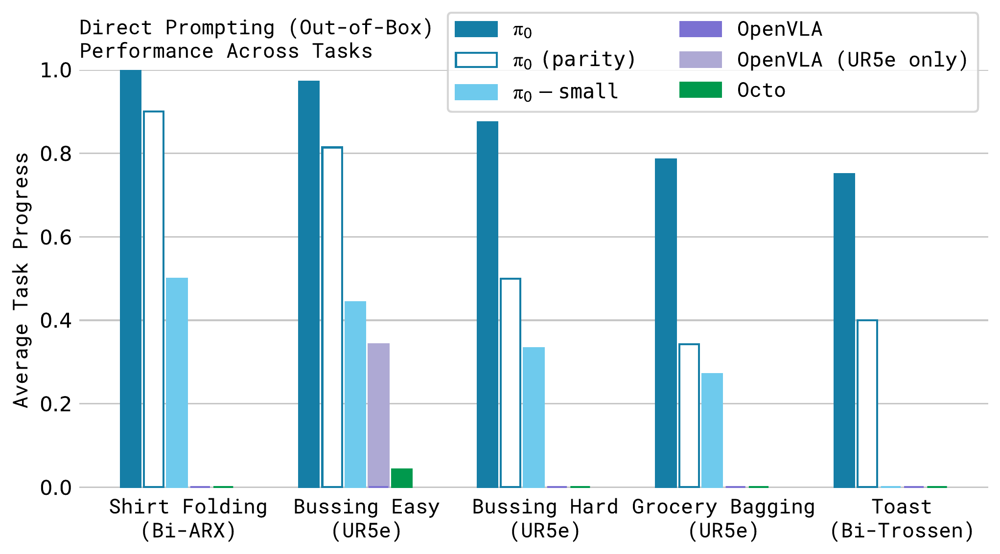

第 21 期 · VLA 入门（上）
VLA
RT-2 (2023-07) → OpenVLA (2024-06) → π0 (2024-10)
可lip

04π0
PHYSICAL INTELLIGENCE · 2024-10 · ARXIV 2410.24164
π0 的出发点三个瓶颈，对应三个做法
Fig.2 · 目标任务：从烘干机取衣 → 运到桌边 → 逐件叠好，数分钟
瓶颈 1 · 规模
大规模预训练的收益，小规模看不到
做法：自采 1 万+ 小时 · 7 种构型 · 68 类任务，加 OXE 开源数据
→ 第 13–14 页
瓶颈 2 · 架构
既吃异构数据，又表示高频、多峰的连续动作
做法：PaliGemma 3B + 300M action expert，flow matching 一次出 50 步动作块
→ 第 15 页
瓶颈 3 · 配方
预训练学广，后训练学精
做法：700k 步混合预训练 → 任务专属 5–100+ 小时后训练
→ 第 16 页
分析 · 多峰 / flow matching / 注意力掩码 / KV cache → 第 17–20 页 · 实验 → 第 21–22 页
π0 · Sec.I
04π0 · 数据 ①
PRE-TRAINING MIXTURE
数据 · 规模与构成一个训练样本 = 一个时间步 (ot, At)

Fig.4 · 左：各平台数据量（时间步）· 右：在混合里的权重
9.03 亿
自采时间步 · 单臂 1.06 亿 + 双臂 7.97 亿
1 万+ 小时
遥操作演示 · 50 Hz
7 种构型
单臂 · 双臂 · 移动双臂
68 类任务
每类含几十种物体与行为
9.1%
开源 OXE · Bridge v2 · DROID · 2–10 Hz
π0 · Sec.V-A · Fig.4
04π0 · 配方
PRE-TRAINING → POST-TRAINING
训练配方预训练学广，后训练学精

Fig.1 · 数据 → 预训练基座 → 三种用法
| 预训练 | 后训练 | |
|---|---|---|
| 数据 | 全部混合：自采 + OXE，杂、覆盖广 | 任务专属高质量数据，5 – 100+ 小时 |
| 步数 | 700k（对照版 160k） | 微调，步数未给出 |
| 目标 | 覆盖各种情形，学会从错误恢复 | 一致、流畅地完成目标任务 |
| 产物 | 基座，可直接提示 | 任务模型 |
用法 ① · 直接提示 out-of-box预训练基座 + 一句指令 → 第 21 页
用法 ② · 微调到新任务1 – 10 小时数据 → 第 22 页
用法 ③ · 高层 VLM 出子命令（π0-HL）“bus the table” → “pick up the napkin”，约 2 秒一条，思路同 SayCan
π0 · Sec.V · Fig.1
04π0 · 实验 ①
OUT-OF-BOX · LANGUAGE FOLLOWING · 真机 · 每任务 10 次 · RUBRIC 部分分
实验 · 直接提示与语言跟随预训练基座，不微调

Fig.7 · 直接提示 · 5 个任务

Fig.9 · 语言跟随：-flat 只给总任务 · -Human 人给子命令 · -HL 高层 VLM 给子命令
5 / 5 任务领先
含只训 160k 步的 compute-parity 版本
≈ 0
同一批数据训的 OpenVLA · Octo（柱状图无数值）
子命令有效
π0 得到人或 VLM 的子命令就涨；无 VLM 初始化的 π0-small 不涨
π0 · Fig.7 · Fig.9